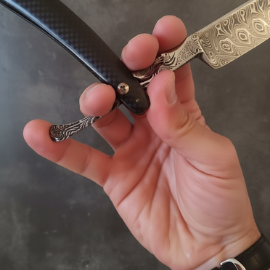
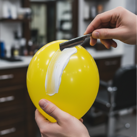

Clase 1: Uso de navaja y afeitado
Fundamentos y Manejo de Herramientas
Cómo Sujetar la Navaja
Dominar el agarre de la navaja es fundamental. Aquí te presentamos dos técnicas efectivas:
- Agarre Principal: Coloca los dedos índice y medio sobre la parte frontal de la espiga (el metal antes de la hoja), mientras que el anular y el meñique descansan en el mango. El pulgar debe posicionarse por debajo, brindando soporte y control.
- Agarre Alternativo: En esta variante, solo el dedo meñique se apoya en el mango. Los dedos índice, medio y anular se colocan en la parte frontal de la espiga, y el pulgar sigue sirviendo de apoyo en la parte inferior.

Práctica de Afeitado: El Globo
Para simular el afeitado en un rostro y ganar confianza, práctica sobre un globo inflado cubierto de espuma. El secreto está en el ángulo: posiciona el filo de la navaja a unos 45 grados respecto a la superficie. Esta inclinación te permite deslizar la hoja suavemente, logrando un afeitado limpio sin riesgo de cortes o atascos.
